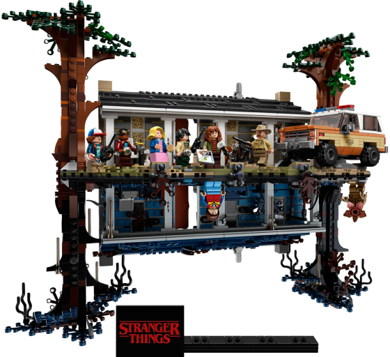
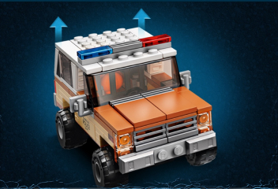
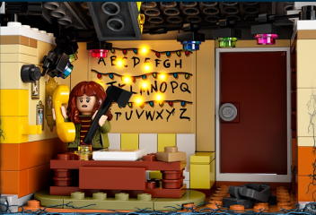
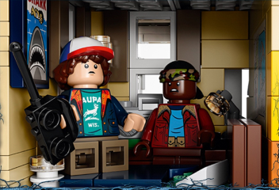

Premier Set
The Upside Down
$199.99 #75810
Packed with instantly recognizable details, this Stranger Things model is a must-have for fans and full of possibilities. A unique build and play experience - flip the model to switch between the real world and the Upside Down.

Hopper’s iconic police truck from the series features a removeable roof.

Just like in the series, the living room wall with an alphabet lights up.

Will’s bedroom is full of details that add to the story and role-play options.
Includes 8 minifigures
Eleven, Mike, Lukas, Dustin, Will, Joyce, Hopper, and Demogorgon, plus accessories seen in the hit Netflix series.
One Model Two Worlds
Stranger Things fans will love to recreate the story from the hit Netflix series with this detailed display model.